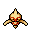
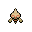

Pokédex / #343
Baltoy #343
GroundPsychic
It moves while spinning around on its single foot. Some Baltoy have been seen spinning on their heads.
Generation 3 · Hoenn

Stats
| Attack | 40 | |
|---|---|---|
| Defense | 55 | |
| Sp. Atk | 40 | |
| Sp. Def | 70 |
In the wild
| Wild level | 20–30 |
|---|---|
| HP | 40 |
| Experience | 5 |
| Egg groups | Mineral |
Evolution
- Evolves into Claydol at level 30.
Moves
| Level | Move | Type | Category | Power | Energy | Cooldown | Effect | |
|---|---|---|---|---|---|---|---|---|
| 1 | Tackle | Normal | Physical | 15 | 15 | 1s | Tackle is one of the most common and basic moves a Pokemon learns. It deals damage with no additional effects. | |
| 5 | Rapid Spin | Normal | Physical | 4 | 70 | 15s | Rapid Spin deals a small amount of damage and removes the effects of several 'trap' moves. | |
| 10 | Mud-Slap | Ground | Special | 20 | 30 | 10s | Mud-Slap deals damage and lowers the target's Accuracy by one stage. | |
| 15 | Confusion | Psychic | Special | 50 | 60 | 12s | Confusion deals damage and has a 10% chance of confusing the target. | |
| 20 | Psybeam | Psychic | Special | 65 | 70 | 16s | Psybeam deals damage and has a 10% chance of confusing the target. | |
| 25 | Earth Power | Ground | Special | 9 | 100 | 21s | Earth Power deals damage and has a 10% chance of lowering the target's Special Defense by one stage. |
Field abilities
FlashBlinkTeleport
Special abilities
Levitate
Egg moves
None
Technical machines
Calm MindDouble TeamDream EaterEarthquakeExplosionIce BeamLight ScreenProtectPsychicRain DanceReflectRock SlideRock TombSafeguardSandstormShadow BallSolar BeamSubstituteToxic
Drops
| Item | Amount | Chance | |
|---|---|---|---|
| sandbag | 1 | 9.52% | |
| horn | 1 | 7.62% | |
| shadow rock | 1 | 4.08% | |
| cutting fang | 1 | 2.29% | |
| heavy stone | 1 | 2.29% | |
| rare sandbag | 1 | 1.63% | |
| clay lump | 1 | 1.63% | |
 | baltoy doll | 1 | 0.1% |
| Earth Plate | 1 | 0.001% | |
| Mind Plate | 1 | 0.001% | |
| TM 59 | 1 | 0.001% |